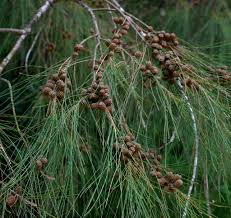

Casuarinaceae
She-oak Family
The Casuarinaceae, or She-oak family, comprises a unique group of evergreen trees and shrubs belonging to the order Fagales. Native primarily to Australasia, Southeast Asia, and the Pacific Islands, they are strikingly adapted to harsh conditions and superficially resemble conifers (like pines) or horsetails (Equisetum). This appearance results from their highly reduced, scale-like leaves arranged in whorls on slender, green, photosynthetic, jointed stems (cladodes). Most species form root nodules with nitrogen-fixing bacteria (Frankia), allowing them to thrive in nutrient-poor soils. They are wind-pollinated, and their fruits are winged samaras released from persistent, woody, cone-like structures.
Overview
Casuarinaceae is classified within the order Fagales, which also includes familiar trees like oaks, beeches, birches, and walnuts. Despite this relationship, Casuarinaceae exhibit remarkable morphological convergence with gymnosperms and horsetails. They are angiosperms (flowering plants), but their leaves are reduced to tiny scales, and the primary photosynthetic organs are the thin, green, ribbed, jointed stems known as cladodes or articles. This structure is a significant adaptation to reduce water loss, allowing many species to thrive in arid or coastal environments.
Another key ecological feature is their symbiotic relationship with nitrogen-fixing actinobacteria of the genus Frankia, which inhabit nodules on the plant roots. This allows Casuarinaceae species to colonize nutrient-poor soils, acting as pioneer species in disturbed areas, coastal dunes, or riverbanks. They play important roles in soil stabilization and enrichment.
The family is relatively small, containing 4 genera and about 95 species. Reproduction is typically via wind pollination (anemophily), with highly reduced, unisexual flowers arranged in separate male spikes and female heads. The female heads mature into distinctive woody, cone-like structures that persist on the plant and release small, winged fruits (samaras) for wind dispersal.
Quick Facts
- Scientific Name: Casuarinaceae R.Br.
- Common Name: She-oak family (or Casuarina family)
- Number of Genera: 4 (Allocasuarina, Casuarina, Ceuthostoma, Gymnostoma)
- Number of Species: Approximately 95
- Distribution: Native to Australia, Malesia, SE Asia, Pacific Islands; some species widely planted/naturalized globally.
- Evolutionary Group: Eudicots - Rosids (Fabids / Eurosids I) - Order Fagales
Key Characteristics
Growth Form and Habit
Evergreen trees or shrubs, ranging from small shrubs to large trees up to 35m tall. Branching patterns can give a weeping appearance. Roots possess nodules containing symbiotic nitrogen-fixing actinobacteria (Frankia).
Leaves
Leaves are extremely reduced to form whorls of minute (1-2 mm long), non-photosynthetic scale-like teeth at the nodes (joints) of the ultimate branchlets. The number of teeth per whorl (typically 4 to 20) is an important character for identifying genera and species.
Stems
The primary photosynthetic organs are the slender, typically drooping, green branchlets, often referred to as cladodes or articles. These stems are distinctly jointed (articulated) and longitudinally ribbed or grooved. Stomata are typically sunken within the grooves between the ribs, a xeromorphic adaptation to minimize water loss. Older stems develop true bark and wood.
Inflorescence
Plants are usually monoecious or dioecious. Flowers are unisexual and highly reduced. Male flowers are borne in simple or branched, terminal or lateral, elongated catkin-like spikes. Female flowers are aggregated into dense, globose to ovoid heads borne laterally on persistent woody branches.
Flowers
Flowers lack a perianth and are adapted for wind pollination (anemophily).
- Male Flower: Extremely simple, consisting usually of a single terminal stamen (rarely 2), initially covered by, then emerging from, a pair of concave bracteoles and a subtending bract. Anthers are basifixed, opening by longitudinal slits.
- Female Flower: Consists of a single pistil composed of 2 fused carpels forming a superior, initially 2-locular ovary (though only 1 locule typically develops) containing 2 ovules (usually only one matures). The pistil is enclosed by a subtending bract and two larger lateral bracteoles. The style is short with 2 long, filiform, reddish stigmas protruding from the head during receptivity.
Fruits and Seeds
The entire female inflorescence matures into a woody, persistent, cone-like structure technically called an infructescence (a type of multiple fruit). This structure consists of the hardened and enlarged bracts and bracteoles of the female flowers. The actual individual fruit, enclosed within this structure, is a small, dry, one-seeded nutlet winged by one or two persistent bracteoles – a type of samara. These samaras are released when the woody valves (derived from bracteoles) of the "cone" open. Seeds lack endosperm and have a large, straight embryo.
Chemical Characteristics
Plants often contain high levels of tannins, particularly proanthocyanidins. The nitrogen-fixing symbiosis with Frankia significantly influences their nitrogen metabolism and ecological interactions. They do not produce glucosinolates, distinguishing them chemically from the Brassicales order.
Field Identification
Casuarinaceae species are generally easy to recognize at the family level due to their unique growth form resembling unrelated groups like conifers and horsetails.
Primary Identification Features
- Conifer/Horsetail-like Appearance: Slender, drooping, green, jointed stems functioning as leaves.
- Articulated Photosynthetic Stems (Cladodes): The green branchlets are clearly segmented or jointed.
- Whorls of Scale Leaves: Tiny scale-like teeth present in whorls at each node (joint) of the cladodes.
- Woody "Cone-like" Fruit: Persistent, cone-like structures (infructescences) bearing winged samaras.
- Tree or Shrub Habit: Woody, perennial plants.
Secondary Identification Features
- Nitrogen-Fixing Nodules: Often present on roots (requires digging).
- Reduced Flowers: Inconspicuous, unisexual flowers arranged in male spikes or female heads (seasonal).
- Distribution: Native range centered in Australasia/SE Asia, but widely planted in coastal/arid zones globally.
- Number of Scale Teeth per Whorl: Important for distinguishing genera (e.g., Casuarina vs. Allocasuarina).
Seasonal Identification Tips
- Year-Round: The characteristic vegetative features (cladodes, scale leaves, habit) are always present. The persistent woody "cones" are highly diagnostic and often remain on the tree for long periods.
- Flowering Season: Male spikes (resembling small catkins) and receptive female heads (often small and reddish) are visible seasonally.
- Fruiting Season: Mature "cones" releasing winged samaras can be observed after the flowering period.
Common Confusion Points
- Conifers (e.g., Pines, Junipers): True gymnosperms with needles or scale leaves, but stems are not typically jointed photosynthetic cladodes, and they produce true cones with seeds (often winged) but not samaras enclosed in bracteoles.
- Horsetails (Equisetum): Have jointed, ribbed, photosynthetic stems and whorls of scale leaves, showing strong convergence. However, Equisetum are non-seed, spore-producing plants (pteridophytes) with distinct terminal spore cones (strobili) and are usually herbaceous, lacking woody structure and the characteristic Casuarinaceae "cones".
- Other Angiosperms: No other flowering plant family closely resembles the unique combination of cladodes, scale leaves, and cone-like fruit structure of Casuarinaceae.
Field Guide Quick Reference
Look For:
- Conifer/Horsetail-like habit
- Slender, green, jointed stems (cladodes)
- Whorls of tiny scale leaves at nodes
- Woody "cone-like" aggregate fruit
- Winged seeds (samaras) inside "cone"
- Tree or shrub
- Nitrogen-fixing root nodules
Key Variations:
- Number of scale teeth per whorl (4-20)
- "Cone" size, shape, and surface texture
- Samara wing size and color
- Habit: Large tree vs. small shrub
- Dioecious vs. Monoecious
Notable Examples
The family includes ecologically important species in their native ranges and some that have become widely planted (and sometimes invasive) globally.

Casuarina equisetifolia
Coastal She-oak, Horsetail Casuarina
A fast-growing tree native to coastal regions from SE Asia through Australasia to Polynesia. Now widely planted in tropical and subtropical coastal areas worldwide for timber, firewood, windbreaks, and erosion control. Characterized by fine, drooping green cladodes with 6-8 scale teeth per whorl and cylindrical "cones" about 1-2 cm long.

Allocasuarina species
Australian She-oaks
The largest genus (~60 species), endemic to Australia, occupying diverse habitats from forests to heaths and arid zones. Includes trees and shrubs like A. verticillata (Drooping She-oak) and A. littoralis (Black She-oak). Distinguished from Casuarina by typically having more scale teeth per whorl (often 9 or more, but variable), differences in "cone" structure, and often darker samara wings. Ecologically vital in many Australian ecosystems.

Gymnostoma species (e.g., G. sumatranum)
Gymnostoma
A genus of about 18 species found in Malesia (esp. Borneo, New Guinea) and the SW Pacific. Considered somewhat distinct or possibly ancestral within the family. Characterized by having stomata located more superficially on the cladode ribs (not deeply sunken in grooves) and often only 4 scale teeth per whorl. "Cones" and samaras differ structurally from other genera.

Casuarinaceae Fruit
She-oak "Cone"
The characteristic woody, cone-like structure (infructescence) formed from the hardened bracts and bracteoles of the female flower head. It protects the developing individual fruits (samaras) and opens via woody valves (modified bracteoles) to release the winged samaras for wind dispersal.
Phylogeny and Classification
Casuarinaceae belongs to the order Fagales, which is part of the Fabid clade of Rosids. This order includes mostly wind-pollinated trees and shrubs like oaks (Fagaceae), birches (Betulaceae), and walnuts (Juglandaceae). Despite its highly modified morphology, molecular data strongly support the placement of Casuarinaceae within Fagales.
Within the order, Casuarinaceae is considered a relatively specialized lineage. Its exact sister group relationship is typically resolved as either the monotypic Central American family Ticodendraceae, or a clade comprising Ticodendraceae + Betulaceae (Birch family). The nitrogen-fixing symbiosis with Frankia is another trait shared with some, but not all, families within Fagales (e.g., Betulaceae, Myricaceae) and other Rosid lineages, suggesting multiple evolutionary origins or losses of this symbiosis.
Position in Plant Phylogeny
- Kingdom: Plantae
- Clade: Angiosperms (Flowering plants)
- Clade: Eudicots
- Clade: Rosids (Fabids / Eurosids I)
- Order: Fagales
- Family: Casuarinaceae
Evolutionary Significance
Casuarinaceae represents a fascinating case study in plant evolution:
- Convergent Evolution: Striking morphological convergence with unrelated groups like conifers and horsetails in adapting to similar environmental pressures (e.g., water stress).
- Adaptation to Stressful Environments: Highly successful colonization of nutrient-poor, arid, or saline habitats facilitated by xeromorphic stem adaptations and nitrogen-fixing symbiosis.
- Morphological Reduction: Extreme reduction of leaves and floral structures associated with wind pollination and specialized habitat adaptations within the Fagales lineage.
- Biogeography: Its predominantly Southern Hemisphere distribution (especially Australia) provides insights into the diversification history of the Fagales order across Gondwanan landmasses.
- Nitrogen Fixation: Contributes to understanding the evolution and ecological importance of actinorhizal (Frankia-based) nitrogen fixation in angiosperms.